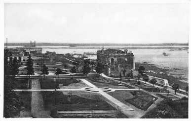

Madre de ciudades, porque de este lugar salieron a conquistar y fundar nuevas tierras los españoles cuyas expediciones iban con los indígenas.
En este lugar el español conoció al indígena guaraní, con quien pudo negociar su permanencia en tierras pacíficas, el español vio con dificultad expandirse y solo lo consiguió negociando con los guaraníes, así nacieron los mestizos.
Pre Colonial Esta zona ocupada inicialmente por los guaraníes, que según el historiador Fulgencio R. Moreno la denominación guaraní significa “guerrear”.
Aquellos guaraníes tenían como vecinos a tribus nómadas y feroces, sobre tales, los guaraníes se constituían por su mayor solidaridad, organización y desarrollo intelectual.
Alejo García pasó por la región de Paraguay en 1524, sería el primer europeo que pasaría por la región Oriental y llegaría hasta el Chaco. En pos de estas noticias se movió Sebastián Gaboto, poco después de su ruta a las Molucas y llegó al Paraguay. Con las noticias de riquezas que se hallaban hacia el nuevo mundo, partió de España la gran expedición de Don Pedro de Mendoza, que arribó al paraje donde se efectuó la primera fundación de Buenos Aires, en el año 1536.
García y Gaboto habían explorado los ríos arriba del Paraná. Al gran río se lo denominaba indistintamente “Río Paraguay y Río de la Plata”, tan pronto como fue posible Mendoza despachó una expedición al mando de Juan de Ayolas, para que remontara el río, buscando afanosamente las famosas sierras citadas más arriba.
Época Colonial El 15 de agosto de 1537 fue fundado como fuerte militar por Juan de Salazar y Espinosa. El acta de fundación se fechó el 16 de septiembre de 1541, momento en que su cabildo fue instituido por el teniente gobernador Domingo Martínez de Irala, acto que elevó a la categoría de ciudad.
Donde hoy se ubica la ciudad estuvo en un inicio habitado por indígenas de la familia de los Carios. El fuerte llamado Nuestra Señora de la Asunción fue fundado el 15 de agosto de 1537 por Juan de Salazar de Espinosa, quien justamente había ido en la búsqueda de Ayolas.
Periodo Independiente El 14 de mayo se dio inicio al camino de la independencia, dirigido por el capitán Pedro Juan Caballero, los próceres emplazaron ocho cañones frente a la casa del gobernador Bernardo de Velasco, el cual se rindió.
Durante el gobierno de José Gaspar Rodríguez de Francia, la mayor parte del centro fue demolida para rehacer la planta urbana en forma de cuadrícula. Luego de la Guerra de la Triple Alianza, Asunción fue ocupada por tropas brasileñas y aliadas desde enero de 1869, la ocupación Aliada, en este caso la del ejército del Brasil, duraría hasta 1876.
Siglo XX hasta la actualidad El estadio «Defensores del Chaco», debe su nombre justamente a que en este lugar se reclutaba al ejército que iría a defender el Chaco.
Desde el año 1993, Asunción pasa a ser un municipio autónomo administrado como distrito capital y no está integrado formalmente a ningún departamento.